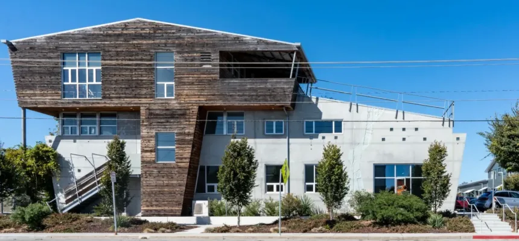
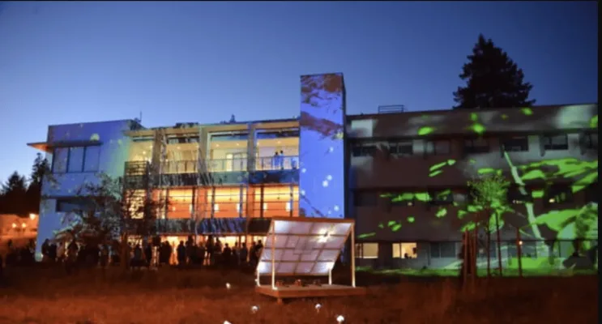

Room Reservations
UC Santa Cruz Arts Division event spaces. Pick a space to check its live availability and request a block of hours — an administrator reviews every request before it is confirmed.
-

Panetta Conference Room 100 Panetta Avenue · seats 28, up to 73 standing -

Digital Arts Research Center Dark Lab and Light Lab
Booking the Panetta room for the first time? Read the event guide before your event.